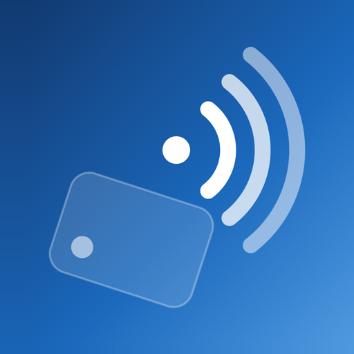

- Price
- Free
- Ads
- None
- Tracking
- None
- License
- MIT
NFC Forge is an NFC app for iPhone. It shows you everything iOS can read from a tag, writes almost any kind of record, and has low-level tools for when you need them. There are no accounts, and nothing you scan leaves your phone.
Read
Write
Duplicate
Tools
Supported Tags
- NTAG21x and UltralightNTAG213, 215, 216, Ultralight EV1 Full
- ISO 15693ICODE SLIX, SLIX2, Tag-it HF-I Full
- ISO 7816Type 4, DESFire EV1/2/3 NDEF, APDU
- FeliCaFeliCa Lite-S, FeliCa Standard NDEF, commands
- MIFARE ClassicClassic 1K, 4K UID only